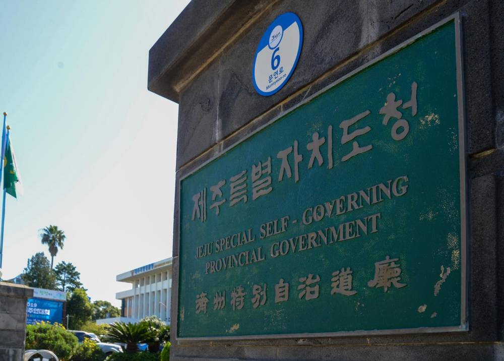

제주형 기본사회 토론회서 도민 에너지 기본배당 제안…풍력·태양광 초과 발전 이익으로 에너지 취약계층·섬 가구에 기본수당

제주도 정책토론회, 은민수 한국보건복지인재원장 4대 정책 제시…기본의료 모빌리티·생태보전 참여소득·청년 사회돌봄 참여소득도
풍력과 태양광에서 나오는 초과 발전 이익을 도민에게 기본수당으로 돌려주자는 도민 에너지 기본배당이 제주형 기본사회 정책 방안의 하나로 제시됐다. 제주특별자치도는 9일 제주썬호텔에서 제주형 기본사회 실현을 위한 정책토론회를 열었고, 은민수 한국보건복지인재원장이 기본사회의 핵심 가치와 제주 추진 방향을 발표했다. 은 원장은 기본사회를 누구나 사는 곳에서 소득뿐 아니라 의료·주거·교육·돌봄·교통·에너지 같은 필수 서비스를 보장받는 사회로 설명하고, 지방분권과 주민 참여, 사람과 자연의 공존, 사회연대경제, 보편적 기본서비스를 핵심 가치로 꼽았다. 에너지 기본배당은 신재생에너지의 초과 이익과 관련 기금으로 에너지 취약계층과 도서지역 가구에 기본수당을 주는 방안이다. 이와 함께 의료 취약지 주민을 종합병원까지 잇는 수요응답형 기본의료 모빌리티, 해양쓰레기 수거 같은 생태보전 활동에 공공 포인트를 주고 지역화폐로 바꿔 주는 생태보전 참여소득, 취업 취약 청년이 홀로 사는 노인·장애인을 돌보면 생활임금 수준을 주는 청년 사회돌봄 참여소득도 제안됐다.
시민에너지 관점
제주는 바람을 공공자원으로 보고 풍력 개발 이익 일부를 공유화 기금으로 거둬 온 곳이라, 에너지 기본배당은 그 흐름을 도민 개개인에게까지 잇는 제안이다. 초과 이익이 날 때만 나누는 방식은 전력 시장 가격이 떨어지거나 출력 제한이 늘면 배당이 줄어든다는 한계가 있다. 그래서 배당의 재원을 사업자의 남는 이익에 기대기보다 도민과 마을이 직접 지분을 가진 발전소에서 꾸준히 나오게 해야 한다 — 수당을 받는 도민이 아니라 발전소의 주인인 도민이어야 한다. 제주도는 기본배당 설계와 함께 새 풍력·태양광 사업에 도민 출자 몫을 의무로 두는 일부터 시작해야 한다.
출처: 제주매일 2026-11-09 문도연 기자 원문 보기
창간 전 시험 발행 기사입니다.
済州型基本社会の討論会で道民エネルギー基本配当を提案…風力・太陽光の超過発電利益でエネルギー弱者・島しょ世帯に基本手当
済州道の政策討論会、殷敏洙・韓国保健福祉人材院長が4大政策を提示…基本医療モビリティ、生態保全参加所得、青年社会ケア参加所得も
風力と太陽光から生まれる超過発電利益を道民に基本手当として還元する「道民エネルギー基本配当」が、済州型基本社会の政策案の一つとして示された。済州特別自治道は9日、済州サンホテルで済州型基本社会の実現に向けた政策討論会を開き、殷敏洙（ウン・ミンス）韓国保健福祉人材院長が基本社会の核心価値と済州での推進方向について発表した。殷院長は基本社会を、誰もが住む場所で所得だけでなく医療・住居・教育・ケア・交通・エネルギーといった必須サービスを保障される社会だと説明し、地方分権と住民参加、人と自然の共存、社会連帯経済、普遍的基本サービスを核心価値に挙げた。エネルギー基本配当は、再生可能エネルギーの超過利益と関連基金を使い、エネルギー弱者と島しょ地域の世帯に基本手当を支給する案だ。あわせて、医療が手薄な地域の住民を総合病院まで結ぶ需要応答型の基本医療モビリティ、海洋ごみの回収など生態保全活動に公共ポイントを付与して地域通貨に換える生態保全参加所得、就職に困難を抱える若者が一人暮らしの高齢者や障害者を支える活動に生活賃金水準を支払う青年社会ケア参加所得も提案された。
市民エネルギーの視点
済州は風を公共資源とみなし、風力開発利益の一部を共有化基金として集めてきた地域であり、エネルギー基本配当はその流れを道民一人ひとりにまでつなぐ提案だ。超過利益が出たときだけ分ける方式には、電力市場価格が下がったり出力抑制が増えたりすれば配当が減るという限界がある。だから配当の財源を事業者の余剰利益に頼るより、道民と集落が直接持ち分を持つ発電所から安定して生まれるようにすべきだ。手当を受け取る道民ではなく、発電所の所有者である道民でなければならない。済州道は基本配当の設計とあわせ、新たな風力・太陽光事業に道民出資枠を義務づけることから始めるべきだ。
出典: 제주매일 2026-11-09 문도연 기자 原文を読む
創刊前の試験発行記事です。
济州型基本社会讨论会提出道民能源基本分红，以风电光伏超额发电收益向能源弱势群体和海岛家庭发放基本津贴
济州道政策讨论会上，韩国保健福祉人才院院长殷敏洙提出四大政策…还包括基本医疗出行、生态保护参与收入、青年社会照护参与收入
把风电和光伏产生的超额发电收益以基本津贴形式返还道民的“道民能源基本分红”，被列为济州型基本社会政策方案之一。济州特别自治道9日在济州太阳酒店举行实现济州型基本社会政策讨论会，韩国保健福祉人才院院长殷敏洙就基本社会的核心价值和济州推进方向作了发言。殷院长将基本社会解释为人人在居住地不仅有收入保障，还能获得医疗、住房、教育、照护、交通、能源等必需服务的社会，并把地方分权与居民参与、人与自然共存、社会连带经济、普遍基本服务列为核心价值。能源基本分红方案是利用可再生能源超额收益和相关基金，向能源弱势群体和海岛地区家庭发放基本津贴。讨论会还提出：把医疗资源薄弱地区居民接送到综合医院的需求响应型基本医疗出行；对参与海洋垃圾清理等生态保护活动的道民发放公共积分并可兑换地方货币的生态保护参与收入；以及让就业困难青年照护独居老人和残障人士、并支付生活工资水平报酬的青年社会照护参与收入。
市民能源视角
济州一直把风视为公共资源，并将部分风电开发收益收入共享基金，能源基本分红则是把这一做法延伸到每一位道民的提议。只在出现超额收益时才分配的方式存在局限：一旦电力市场价格下跌或限电增多，分红就会减少。因此，分红的资金来源不应依赖开发商的剩余利润，而应来自道民和村庄直接持股的电站，使其稳定产生——道民应当是电站的主人，而不只是领取津贴的人。济州道在设计基本分红的同时，应先规定新建风电和光伏项目必须为道民预留出资份额。
来源: 제주매일 2026-11-09 문도연 기자 查看原文
本文为创刊前试发行文章。
Jeju Basic Society Forum Proposes a Residents' Energy Dividend Paying Basic Allowances to Energy-Poor and Island Households from Surplus Wind and Solar Profits
At a Jeju provincial policy forum, Eun Min-su, president of the Korea Health and Welfare Human Resources Development Institute, presents four policies, including basic medical mobility, an ecological conservation participation income and a youth social care participation income
A residents' energy dividend that would return surplus profits from wind and solar power to Jeju residents as a basic allowance has been put forward as one of the policy options for a Jeju-style basic society. Jeju Special Self-Governing Province held a policy forum on realising a Jeju-style basic society at the Jeju Sun Hotel on the 9th, where Eun Min-su, president of the Korea Health and Welfare Human Resources Development Institute, presented the core values of a basic society and directions for Jeju. Eun described a basic society as one in which everyone, wherever they live, is guaranteed not only income but essential services such as health care, housing, education, care, transport and energy, and named decentralisation and resident participation, coexistence of people and nature, the social and solidarity economy, and universal basic services as its core values. The energy dividend would use surplus renewable energy profits and related funds to pay a basic allowance to energy-poor households and households on outlying islands. Other proposals included on-demand basic medical transport linking residents of underserved areas to general hospitals, an ecological conservation participation income that awards public points convertible into local currency for activities such as collecting marine litter, and a youth social care participation income paying wages at living-wage level to young people with difficulty finding work who support older people and people with disabilities living alone.
Citizen Energy View
Jeju has treated wind as a public resource and collected part of wind development profits into a sharing fund, and the energy dividend would extend that approach to every individual resident. Sharing only when surplus profits arise has a limit: dividends shrink when power market prices fall or curtailment rises. That is why the dividend should be funded steadily from power plants in which residents and villages hold stakes directly rather than relying on developers' leftover profits, so that residents are owners of the plants, not just recipients of an allowance. Alongside designing the dividend, Jeju should start by requiring a share for resident investment in every new wind and solar project.
Source: 제주매일 2026-11-09 문도연 기자 Read the original
This article was published during the trial period before launch.